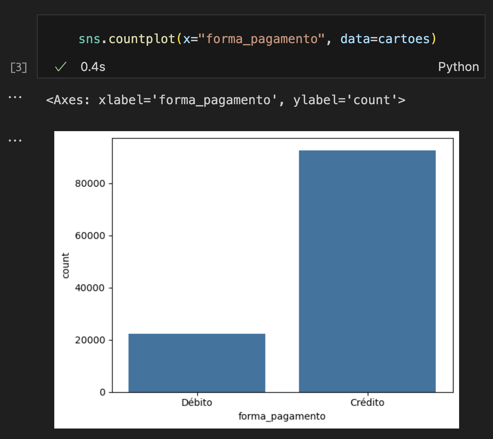

Gráficos de barras - Variáveis categóricas X numéricas
Programação para Advogados – 2024.2 José Luiz Nunes e Lucas Thevenard
Revisão
- O que vimos até aqui?
- Que tipo de gráfico o countplot gera?
- Quais tipos de variáveis estavam sendo usadas?
Revisão
- Gráficos são “representações geométricas dos dados”
- Qual atributo dos dados esta sendo representado?
